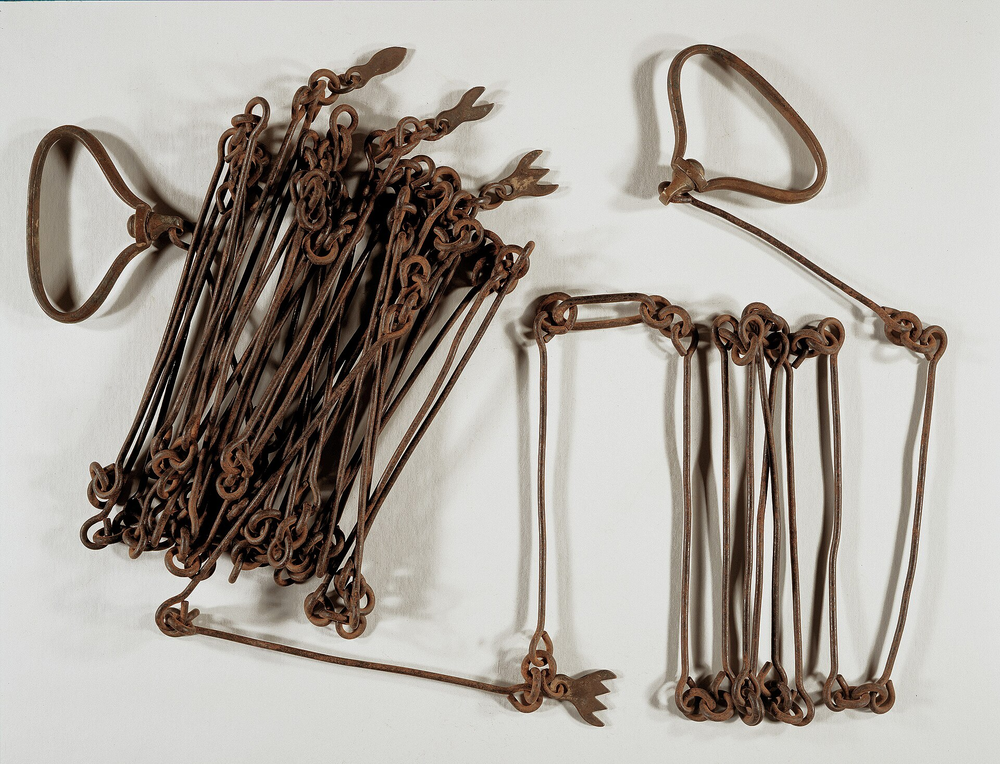

Chapter 1
The Reservoir Above Johnstown
The surveyor’s chain stretched across the breast of the dam in the spring of 1853, and the man who sighted along it wrote numbers into a leather field book. The embankment measured seventy-two feet from the upstream toe to the downstream face. It stood seventy-two feet high above its foundation. Its crest stretched nine hundred and thirty-one feet from hillside to hillside. The Commonwealth of Pennsylvania had built it. High above the city, the Commonwealth of Pennsylvania built the earthenwork South Fork Dam between 1838 and 1853 as part of a cross-state canal system, the Main Line of Public Works. The numbers meant that the structure was finished. They did not mean that it was safe.
The dam sat in a notch in the Allegheny ridges, fourteen miles upstream from Johnstown, where the south fork of the Little Conemaugh River narrowed between wooded slopes. Behind it, the reservoir held water for the Western Division Canal. Johnstown was the eastern terminus of the Western Division Canal, supplied with water by Lake Conemaugh, as the impoundment was called. The canal needed a steady feed. Boats climbing from the Ohio basin toward the summit at Blairsville and Hollidaysburg drew down the reservoir through a system of sluices and feeder channels. The dam existed to release water on demand, not to hold back a flood.
That distinction mattered. The dam was an earthen embankment — a long mound of puddled clay and rock fill laid down in layers over hillside soil, packed until it would hold water the way a hand-packed snowbank holds a melt. It had no masonry core. It had no concrete cutoff. The spillway was a channel cut through rock on the western abutment, designed to pass surplus water when the reservoir rose above its operating level. The sluices were wooden gates set into masonry culverts, operated by hand wheels and iron rods. The whole structure was built to a canal budget. It served a canal purpose. Nobody built it to protect a city.
Johnstown in 1853 was a canal town. Joseph Johns had founded it in 1800 where the Stonycreek and Little Conemaugh rivers joined to form the Conemaugh River. It began to prosper with the building of the Pennsylvania Main Line Canal in the 1830s. The canal basin sat at the foot of the town. Warehouses lined the wharf. Mules dragged packet boats through the lock chamber. The iron furnaces on the hill above the river had just begun to make bar stock for the railroad builders who were already surveying the gaps.
The town was small. The dam above it was remote. The two had almost no relationship. The reservoir fed the canal. The canal fed commerce. Commerce fed the town. The dam was a node in a system of public works, and the public works were the Commonwealth’s business.
Then the Commonwealth walked away.
The Pennsylvania Railroad completed its line from Philadelphia to Pittsburgh in 1854, one year after the dam was finished. The railroad bought the Main Line of Public Works in 1857. The purchase included the canal, the locks, the aqueducts, the reservoirs, and the dams. The railroad wanted the right-of-way. It did not want the canals. The canals were obsolete the day the purchase closed. The railroad operated some of them for a few years to wind down contracts and satisfy political obligations. Then it let them fill with silt.
The South Fork Dam became surplus property. It held water that nobody needed for a canal that nobody used. The railroad’s inventory listed it as a land asset. The structure sat in its notch in the ridges and held back the Little Conemaugh’s south fork through seasons of rain and snowmelt. Nobody operated the sluices on a canal schedule. Nobody inspected the embankment on a public-works schedule. The wooden gates rotted in their masonry culverts. The spillway channel accumulated debris. The puddled clay settled and cracked. The dam held because it had been built large and because the reservoir level stayed within its operating range. It held for reasons of inertia, not maintenance.
Below it, the valley changed. The Pennsylvania Railroad drove its line through the Little Conemaugh gap in the 1850s. The line connected Pittsburgh to Altoona and Philadelphia. It ran along the valley floor. The tracks passed through Johnstown, followed the Conemaugh westward, and climbed the grade toward the summit at Gallitzin. The railroad brought capital. Capital brought iron.
The Cambria Iron Company built its first furnaces in Johnstown in 1852. By the 1860s, the works covered the valley floor between the rivers. Rail mills, blooming mills, and Bessemer converters lined the Conemaugh’s banks. The company built worker housing on the hillsides. It laid streetcar lines. It employed thousands of men. The town grew from a canal landing into an industrial center. The 1880 census counted more than eight thousand people. By 1889, the population had passed twenty thousand.
The dam sat above all of this. It sat fourteen miles upstream, invisible from the town, separated by ridges and gorges and the winding course of the Little Conemaugh. The people of Johnstown knew it was there. Some of them had worked on it during the canal years. But it was a fact of geography, not a fact of daily concern. The river flooded in the spring. The town flooded in the spring. The floods came from the Stonycreek and the Little Conemaugh. They came from rain and snowmelt. They did not come from the dam. The dam was up in the hills, and it belonged to the railroad, and the railroad had its own problems.
The railroad had problems. The Main Line of Public Works was a financial failure. The canal system had cost the state millions and never returned the revenue its promoters promised. The railroad bought the whole system for a fraction of its construction cost. The South Fork Dam and its reservoir were line items on a balance sheet. The railroad did not maintain them. It did not repair them. It did not inspect them. It held them as real estate.
In 1875, the railroad sold the dam. The buyer was a private individual. The transaction transferred a piece of public infrastructure, built with public money for a public purpose, into private ownership. The dam left the Commonwealth’s books. It left the railroad’s inventory. It entered the ledger of a man who wanted it for what it could become.
The purchaser was John Reilly. He was a Pennsylvania Railroad superintendent. He bought the reservoir and the dam and the surrounding land. His plan was to convert the impoundment into a recreational lake. He would stock it with fish. He would build a hotel. He would attract visitors from Pittsburgh and the coal regions. The dam would hold water for a different kind of navigation. The lake would be a private asset generating revenue through leisure.
Reilly’s project failed. The hotel did not draw enough guests. The dam needed repairs he could not afford. The sluice gates had decayed. The spillway had eroded. The embankment had settled and slumped in sections. Reilly defaulted. The property passed to another owner. That owner also failed. The dam passed through several hands in the 1870s and early 1880s. Each owner saw the reservoir as a commercial opportunity. None of them saw it as a piece of flood-control infrastructure. None of them treated it as a structure whose failure could kill people.
The structure itself told the story of its neglect. The embankment had been built with a clay core running down its center, puddled and compacted in lifts. The core was the dam’s seal against seepage. The core was intact but aging. The upstream face had been riprapped with stone to protect against wave action. The riprap had loosened. The downstream face had been seeded with grass. The grass held the soil against ordinary erosion. It did not hold against concentrated flow. The spillway was a rock-cut channel on the western abutment, designed to pass surplus water when the reservoir exceeded its normal level. The channel was narrow. The rock walls had not been maintained. Trees grew in the channel. Soil and debris had accumulated on the floor. The spillway’s capacity was less than what the original engineers intended.
The sluice gates were the most visible failure. The original design included five cast-iron gates set in masonry culverts through the embankment. The gates allowed operators to release water from the reservoir into the stream below. They were the dam’s control mechanism. They were the means by which an operator could lower the lake level in advance of a storm or manage flow during a flood. By the late 1870s, the gates were gone. They had been removed or had decayed in place. The masonry culverts had partially collapsed. The openings were sealed with plank and earth. The dam had no functioning low-level outlet. The only way water could leave the reservoir was through the spillway. The spillway was obstructed and undersized.
The dam had become a structure without controls. It held water. It released water when the reservoir rose above the spillway crest. It had no other means of managing flow. An operator could not lower the lake. An operator could not release water in advance of a storm. The dam was a passive vessel. It held what it held. It released what it could not hold. Everything depended on the spillway’s capacity and the embankment’s height.
The embankment’s height had also changed. The original construction set the crest at an elevation designed to provide freeboard above the spillway. Freeboard is the margin between the water’s surface and the top of the dam — the space that absorbs wave action and surge. The original freeboard was adequate for a canal reservoir. The structure was not designed to withstand a maximum flood. It was designed to operate within a known range.
The range had shifted. The reservoir’s purpose had changed. The dam was no longer a canal reservoir managed by state engineers. It was a private lake managed by owners who had no engineering expertise and no regulatory oversight. The structure had not been upgraded. It had been allowed to degrade. The deferred-maintenance debt was accumulating. Every year without inspection, without repair, without gates, without spillway clearing added to the cost that would eventually come due. The cost was not on any balance sheet. The cost was in the structure itself, in the settling clay and the rotting gates and the narrowing spillway and the growing town below.

Then the men from Pittsburgh arrived.
In 1879, a group of Pittsburgh speculators built cottages and a clubhouse to create the South Fork Fishing and Hunting Club, an exclusive and private mountain retreat. Membership grew to include more than fifty wealthy steel, coal, and railroad industrialists. Lake Conemaugh at the club became the private preserve of men whose fortunes came from the industries that had made the valley below an industrial center. The men who bought the dam were the men whose mills and mines and railroads had built the town that sat in the floodplain downstream.
The club’s members were not engineers. They were industrialists, financiers, and executives. They knew how to build steel mills and organize coal production and manage railroad schedules. They knew how to make money. They did not know how to maintain an earthen dam. They did not hire engineers to inspect the structure before purchase. They did not commission a hydraulic analysis of the spillway’s capacity. They did not review the dam’s construction records or operating history. They bought a lake. The dam came with it.
The purchase was a transaction. It was not a transfer of responsibility. The club acquired the property as a real estate asset. The dam was a feature of the property, like the woods and the stream and the road. The club treated it as scenery. The lake was the amenity. The dam was the mechanism that made the amenity possible. The members did not see the dam as a piece of infrastructure whose failure could destroy a city. They saw it as a wall that held water for their fishing and their boating.
The town below the dam did not know the names of the men who now owned the structure. The town knew the Cambria Iron works. The town knew the Pennsylvania Railroad. The town knew the rivers. The town did not know that the reservoir upstream had changed hands. The town did not know that the dam’s sluice gates were gone. The town did not know that the spillway was obstructed. The town did not know that the embankment had settled. The town did not know that the structure above them had been reclassified from a public utility to a private amenity.
The reclassification was quiet. There was no announcement. There was no hearing. There was no public notice. The dam passed from one private owner to another in a deed transfer recorded in the county courthouse. The deed described the property boundaries. It did not describe the dam’s condition. It did not describe the dam’s capacity. It did not describe the dam’s hazard classification. There was no hazard classification. The concept did not exist in Pennsylvania law in 1879. Dams were not regulated. Dams were not inspected. Dams were not classified by the risk they posed to downstream populations. The state had built the dam. The state had sold the dam. The state had no further interest in it.
The absence of regulation was not unusual. Most states in the 1880s had no dam-safety laws. Dams were private property. Owners could build them, modify them, neglect them, and abandon them. The only legal constraint was common-law liability for damages if a dam failed. That constraint operated after the fact. It required a lawsuit. It required proof of negligence. It required a court willing to hold a private corporation liable for the consequences of its property. The legal system was not designed to prevent dam failures. It was designed to sort responsibility after one occurred.
The South Fork Dam sat in this legal vacuum. It was a large structure holding a large volume of water above a populated valley. It was privately owned. It was unmaintained. It was uninspected. It was unregulated. Its condition was unknown to anyone except the men who had just bought it, and they had not examined it. Its capacity was unknown. Its spillway’s discharge capacity was unknown. Its embankment’s structural integrity was unknown. The dam was a black box. It held water. That was all anyone knew.
The water it held was significant. The reservoir covered approximately four hundred and fifty acres. It held roughly three billion gallons of water at its normal operating level. The water sat in a basin formed by the natural topography of the south fork valley. The hillsides rose on three sides. The dam closed the fourth side. The basin was deep. The water was cold. It fed the stream below through the spillway and through seepage through the embankment. The stream flowed down the valley toward the Little Conemaugh. The Little Conemaugh flowed west toward Johnstown. The water’s path was direct. Fourteen miles of river and gorge separated the dam from the town.
The vertical drop was also significant. The reservoir’s surface sat at an elevation well above the valley floor at Johnstown. The water had to descend through the gorge, gaining speed and mass as it fell. The river channel was narrow. The gorge was constricted. A sudden release of water from the reservoir would accelerate through the channel with enormous force. The geometry of the valley was a funnel. The dam was at the wide end. Johnstown was at the narrow end.
The men who bought the dam did not think about the funnel. They did not think about the fourteen miles of river between the dam and the town. They did not think about the elevation drop. They did not think about the volume of water. They thought about the lake. They thought about the fishing. They thought about the clubhouse and the cottages and the road and the guests. The dam was an entry in an absentee ledger, a line item on a balance sheet that recorded the cost of leisure. The ledger did not include a column for risk.
The ledger was not unusual. Most of the club’s members held assets across western Pennsylvania. They owned steel mills in Pittsburgh, coal mines in the Allegheny foothills, railroad stock in companies that ran through the Conemaugh valley. They managed these holdings from offices in Pittsburgh. They visited their properties when problems arose. They did not visit the dam. The dam was not a problem. The dam was a wall that held water. It had held for thirty years. It would hold.
The assumption was not irrational. The dam had survived since 1853. It had held through storms and freshets and snowmelt seasons. It had held without maintenance for twenty years. It had held without operators for fifteen. The structure’s survival was evidence of its strength. The evidence was real. The dam was large. The embankment was massive. The clay core was intact. The structure could hold water under ordinary conditions.
Ordinary conditions were not the problem. The problem was extraordinary conditions. The dam had never been tested by a storm that filled the reservoir to its crest. The spillway had never been required to pass the flow of a major flood. The embankment had never been saturated by a prolonged rainfall event that raised the reservoir above its normal operating range. The dam’s survival proved that it could withstand normal conditions. It did not prove that it could withstand extreme conditions. The distinction was the difference between a canal reservoir and a hazard.
The canal engineers who built the dam understood the distinction. They designed the structure for a specific purpose. They calculated the reservoir’s operating range. They sized the spillway for expected inflows. They set the freeboard for wave action and surge within that range. They did not design the dam for a worst-case storm. They did not need to. The dam was a canal reservoir. It was not a flood-control structure. It was not designed to protect a city. It was designed to feed a canal.
The canal was gone. The city was there. The dam was still there. The purpose had changed. The structure had not. The dam that had been adequate for a canal reservoir was not adequate for a private lake above a growing industrial city. The dam’s capacity had not changed. The consequences of its failure had changed. The population below had grown. The industrial development along the river had intensified. The railroad line through the valley had become a major transportation corridor. The risk had increased. The structure had not.
This was the core problem. The dam was a fixed structure in a changing environment. The risk it posed was a function of its condition and the consequences of its failure. The condition was deteriorating. The consequences were growing. The gap between the two was widening every year. The town grew. The dam aged. The spillway clogged. The gates disappeared. The embankment settled. The freeboard decreased. The reservoir’s capacity to absorb a major storm was diminishing. The town’s vulnerability to a dam failure was increasing.
Nobody measured this gap. Nobody calculated the risk. Nobody assessed the dam’s condition against the consequences of its failure. The state had abandoned the structure. The railroad had sold it. The private owners had not examined it. There was no regulatory authority to require an inspection. There was no legal mechanism to compel maintenance. There was no institutional process to evaluate the hazard. The dam existed in a void. It held water. The water sat above a town. The town sat below a dam. The two were connected by fourteen miles of river and by the law of gravity. The connection was physical. It was not administrative. It was not regulatory. It was not financial. It was not legal. It was simply a fact of geography.
The geography was the dam’s most dangerous feature. The reservoir sat in a basin high in the Allegheny ridges. The town sat in a valley at the confluence of two rivers. The water’s path from the dam to the town was steep, narrow, and direct. There were no detention basins. There were no flood plains. There were no storage areas to absorb a sudden release. The river channel was a chute. The water would arrive in a surge. The surge would carry the debris of the gorge. The debris would include trees, rocks, soil, and whatever the water picked up along the way. The surge would hit the town with the force of a wall.
The force was calculable. The reservoir held roughly three billion gallons of water. The water weighed roughly twelve billion pounds. The energy of that mass descending through fourteen miles of gorge was enormous. The water would arrive not as a rising river but as a wave. The wave would destroy whatever it hit. The destruction would be proportional to the volume and the velocity. The volume was fixed by the reservoir’s capacity. The velocity was fixed by the gradient. Both were known quantities. Both were ignored.
The dam was now a private asset with no public accountability, its safety dependent on the new owners’ discretion. The owners were men whose fortunes came from the industries that had built the town below. The town was their creation. The dam was their property. The two facts sat in the same valley. The men did not see the connection. They saw a lake. They saw a clubhouse. They saw a retreat. They did not see a weapon.
The dam held. The water sat. The town grew. The ledger recorded the cost of the clubhouse and the cottages and the road. The ledger did not record the cost of the settling embankment and the rotting gates and the narrowing spillway. The cost was accumulating. The cost would come due. The dam was a line item in a distant book. The town was a fact on the ground. The water was between them. The water did not know whose ledger it sat in. The water knew only gravity.